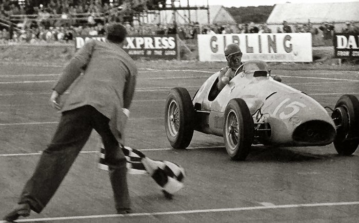
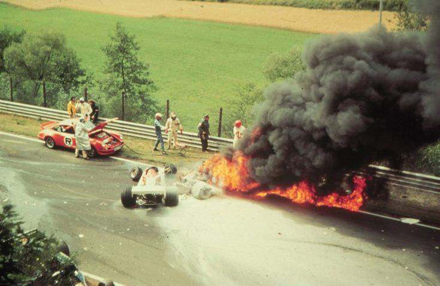
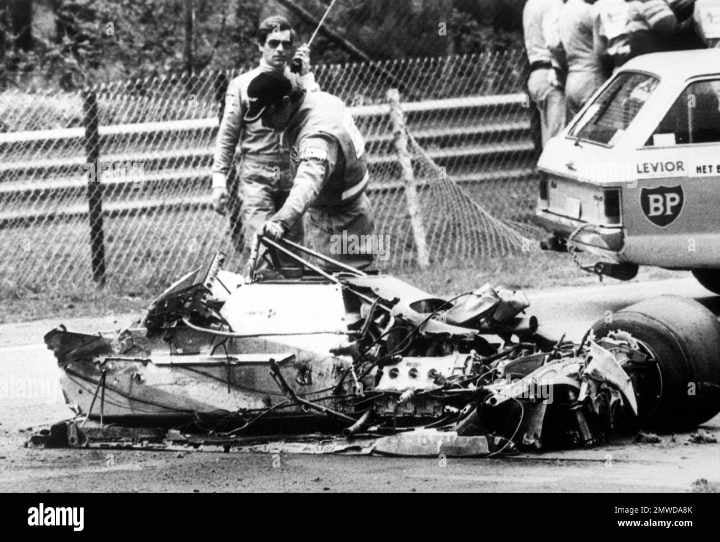
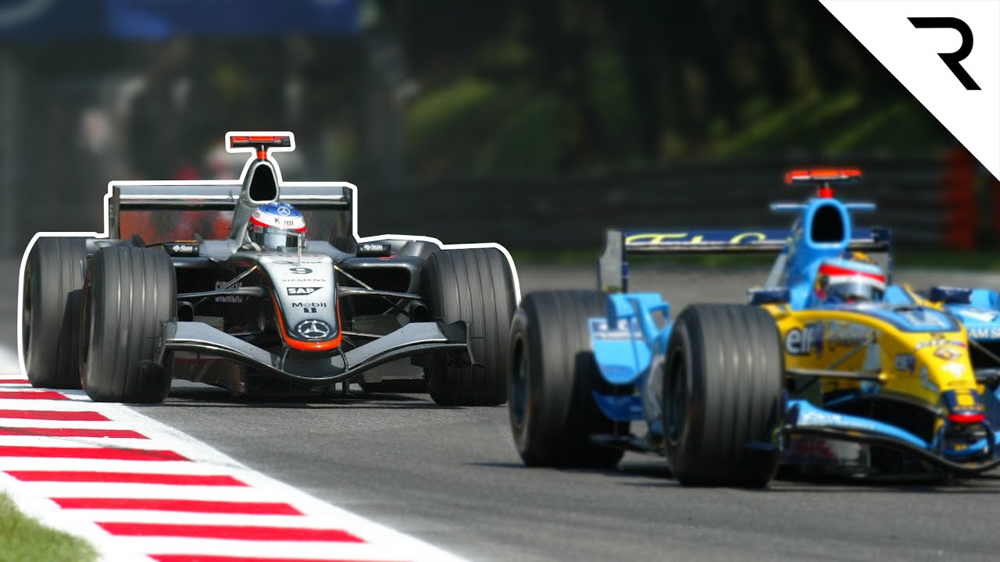
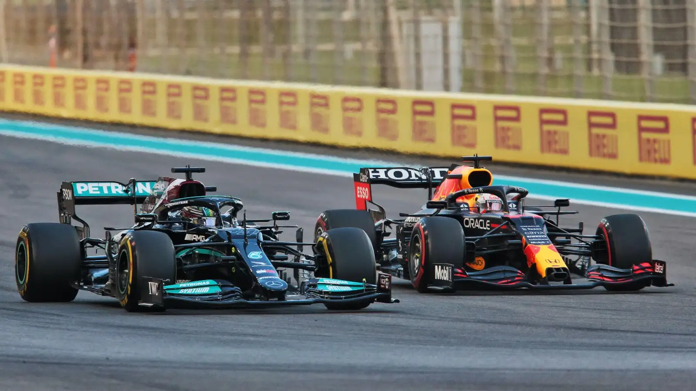

<html lang="en"></html>
<head>
    <meta charset="UTF-8">
    <meta name="viewport" content="width=device-width, initial-scale=1.0">
    <link rel="stylesheet" href="history.css">
     <title> HISTORY </title>
</head
    
<body>

    <h3><br>GAME-CHANGING EVENTS<br></h3>


 <section class="events">
    <br>
    <c><br>1952 British Grand Prix: <br>The First Triple Crown</c>
       <p>Driver: Alberto Ascari
      <br>Significance: Ascari became the first driver to win the Monaco Grand Prix, the Indianapolis 500, 
      and the 24 hours of Le Mans in the same year.</p>

 <section class="eventsss">
    <br><br><br><br>
    <e><br>1975 Austrian Grand Prix: <br> Niki Lauda's Near-Fatal Crash</e>
    <p>Driver: Niki Lauda, a renowned Austrian Formula 1 driver.
    Significance: During the Austrian Grand Prix, Lauda's car crashed into a barrier and burst into flames.
   He suffered severe burns and was initially given a slim chance of survival. However, through intensive 
    medical care, he made a remarkable recovery and returned to racing just six weeks later. This event is 
   considered one of the most dramatic and inspiring moments in F1 history.</p>
            
 <section class="eventssss">
    
    <f><br>1997 Japanese Grand Prix: <br> The Championship Showdown</f>
    <p>Drivers: Michael Schumacher and Jacques Villeneuve.
    <br>Significance: The final race of the 1997 season was a tense battle between Schumacher and Villeneuve for
    the championship. In a controversial move, Schumacher intentionally crashed into Villeneuve's car in an 
    attempt to eliminate him from the race. However, Schumacher was disqualified for his actions, and 
    Villeneuve secured the championship title.</p>
    
 <section class="events5">
        <br><br>
        <e>2005 Italian Grand Prix: <br> Fernando Alonso's Overtaking Masterclass</e>
        <p>Driver: Fernando Alonso, a Spanish driver
        <br>Significance: Alonso, driving for Renault, showcased his exceptional overtaking skills during the
        Italian Grand Prix. He passed multiple cars, including Jenson Button and Kimi Räikkönen, to secure 
        a memorable victory.</p>

 <section class="events6">
            
            <f>2021 Abu Dhabi Grand Prix:<br> The Controversial Championship Decider</f>
            <p>Drivers: Max Verstappen and Lewis Hamilton.
            <br>Significance: The final lap of the 2021 Abu Dhabi Grand Prix was a dramatic showdown between 
            Verstappen and Hamilton for the championship. </p>
</body>
